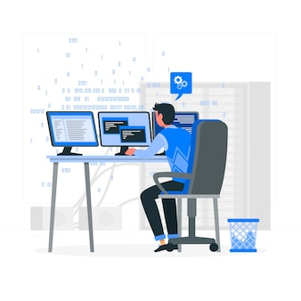

Projects
Created an AI-driven object detection web app using Next.js 14, Tailwind CSS, TensorFlow, and React. Utilized cutting-edge machine learning to enable real-time object recognition in a user-friendly interface.

Generative Gemini is an Clone for Google Own Generative Model and replicating the core functionality of the Gemini protocol using ReactJS

ReactYouTube is a YouTube clone built with React.js, Redux, Tailwind CSS, and the YouTube API.

Ochi Framermade using React and Tailwind CSS.


A website that shows that user can see products for shopping their items

Netflix Clone made using React and Tailwind CSS.

A website made using Tailwind Css For sleek UI.

Crafted with HTML, CSS, and JavaScript, this real-time clock offers a chic design using cutting-edge Grid CSS for responsiveness.

Introducing my revised Amazon clone—a meticulously crafted e-commerce platform that seamlessly combines functionality with a visually stunning design.